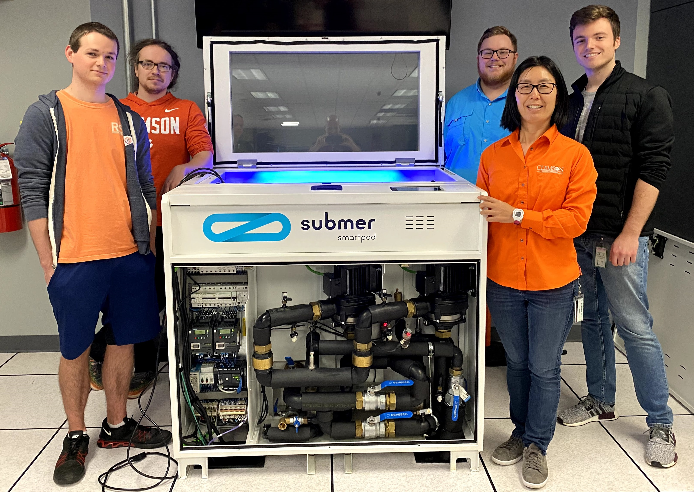

DeepGreen
Laying the foundation for immersion cooling research
This project aims to comprehensively understand the opportunities enabled by liquid immersion cooling, and explore its full potential to boost energy efficiency for high performance computing (HPC) under various thermal and power constraints. Improving energy efficiency, i.e., the ratio of performance to total power consumption, is crucial to sustain performance growth and realize exascale computing within 20 MW of power. HPC systems consume tremendous amounts of power for not only computing but also cooling to keep compute components within their thermal limits. In this project, we investigate liquid immersion HPC systems to optimize overall energy efficiency. we propose to develop machine learning models and system software to understand and optimize energy efficiency and reliability for workloads running on liquid immersion HPC systems. Our experimental platform is a Submer SmartPodX immersion cooling system.
The Capstone course is a class available to Clemson University juniors and seniors in the School of Computing. In this course students work in small teams (4-5 students) with industry clients on a real-world computer science project by playing the part of an independent consulting firm. Teams are expected to communicate with their client and plan out what they are responsible for throughout the semester they are working. The capstone aspect of this project works with Dr. Rong Ge and Submer as clients to contribute meaningful insights to the overall research topic of the effectiveness fully immersive cooling has over traditional cooling approaches.
Creative Inquiry is the imaginative combination of engaged learning, cross-disciplinary interactions and undergraduate research that is unique to Clemson University. Team-based investigations are led by faculty mentors and typically span a year or more. Students take on problems that spring from their own curiosity, from a professor's challenge or from the pressing needs of the world around them. The DeepGreen Creative Inquiry is led by Dr. Rong Ge and works on several aspects of the project including setting up auxiliary devices (FPGAs, GPUs, etc.), managing and maintaining the physical hardware, and anything else that will meaningfully contribute to the project.
Thanks to the following organizations and companies for providing support through funding and/or donated devices.